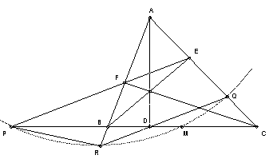

ABC is an acute-angled triangle. The altitudes are AD, BE and CF. The line through D parallel to EF meets AC at Q and AB at R. The line EF meets BC at P. Show that the midpoint of BC lies on the circumcircle of PQR.
Solution
Many thanks to Helder Oliveira de Castro for the following solution

By Ceva, Menelaus we have (AE/EC) (CD/DB) (BF/FA) = (AE/EC) (PC/PB) (BF/FA), so CD/DB = PC/PB. Let M be the midpoint of BC. Put PM = x, DM = y, BM = R. Then PB = x - R, DC = y + R, PC = x + R, BD = R - y and CD/DB = PC/PB gives xy = R2. Hence (x - y) y = (R + y) (R - y) or PD·DM = BD·DC.
∠BFC = ∠BEC, so BFEC is cyclic, so ∠B = 180o - ∠CEF = ∠AEF. QR is parallel to EF, so ∠AEF = ∠AQR. Hence ∠RBC = 180o - ∠B = 180o - ∠AQR = ∠RQC. Hence RBQC is cyclic. Hence BD·DC = RD·DQ. So RD·DQ = PD·DM. Hence PRMQ is cyclic.

© John Scholes
jscholes@kalva.demon.co.uk
7 July 2003
Last corrected/updated 7 Jul 2003